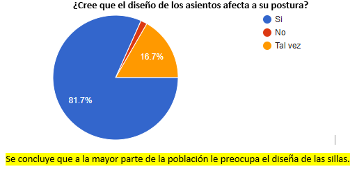
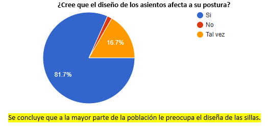

4. Definir
En esta punto vamos a diferenciar nuestro producto de otros que ya existen en el mercado, comparando las características de nuestro producto y analizando en que se diferencia de los demás:
Esto se logró determinar gracias a las diferentes ideas recolectadas de los usuarios, mediante la observación de los mismos. Por lo tanto, es una metodología basada en observación.


LA CAUSA RAÍZ DEL PROBLEMA.

EL PROBLEMA EN UN ENFOQUE DIRECTO.
1. Encuentran la causa raíz del problema y generan criterios para evaluar la información y contrarrestarlas con el uso correcto de técnicas.
Con la encuesta realizada a 60 personas se logró determinar que el problema radica primordialmente en el uso de sillas inadecuadas y es la causa de que se genere en los estudiantes una mala postura, además se estableció que el mejoramiento de las sillas sería muy complicado en cuanto a costos, por ello se está optando acondicionar las sillas con sistema novedoso y práctico para mejorar la ergonomía de los estudiantes además de lograr el favorecimiento de una correcta posición del cuerpo, ayudando a reducir la tensión y la fatiga de las piernas, la espalda y el cuello además cuenta con balanceo para favorecer la circulación sanguínea Ello le ayudará a que pueda reducir todas aquellas patologías o problemas derivados de la tensión que se acumulan en sus piernas.
2. Enmarcan el problema en un enfoque directo.
El problema directamente va a enfocado a mejorar la posición de la columna en las sillas existentes, esto a través de la implementación de un dispositivo a la silla, con la encuesta realizada se determina que la solución puede estar en el reposapiés portátil que estamos diseñando, a continuación los resultados de la encuesta que nos permiten afirmar este punto.
3. Define los insight del usuario, cliente o consumidor.
Con las encuestas realizadas se establece un contacto con los posibles clientes y hemos logrado establecer como les gustaría el producto y estamos trabajando para satisfacer a la mayor parte de los clientes con nuestro diseño.
Hacer click para ver las ideas de los clientes.